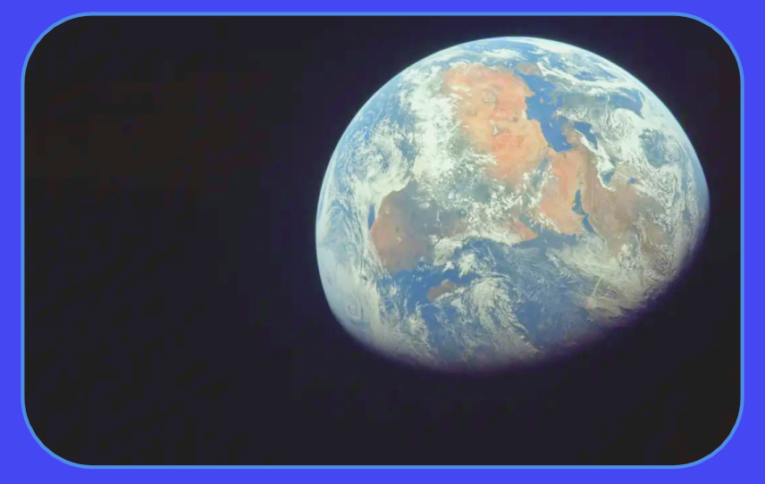

What this app does APOD
Search helps users find NASA's Astronomy Picture of the Day by entering a non-future date. After searching, the app shows the image, title, date, and explanation.
Branding Style
The design uses a simple space theme with dark colours, clear blue buttons, white content cards, and easy-to-read text so users can search APOD images without confusion.